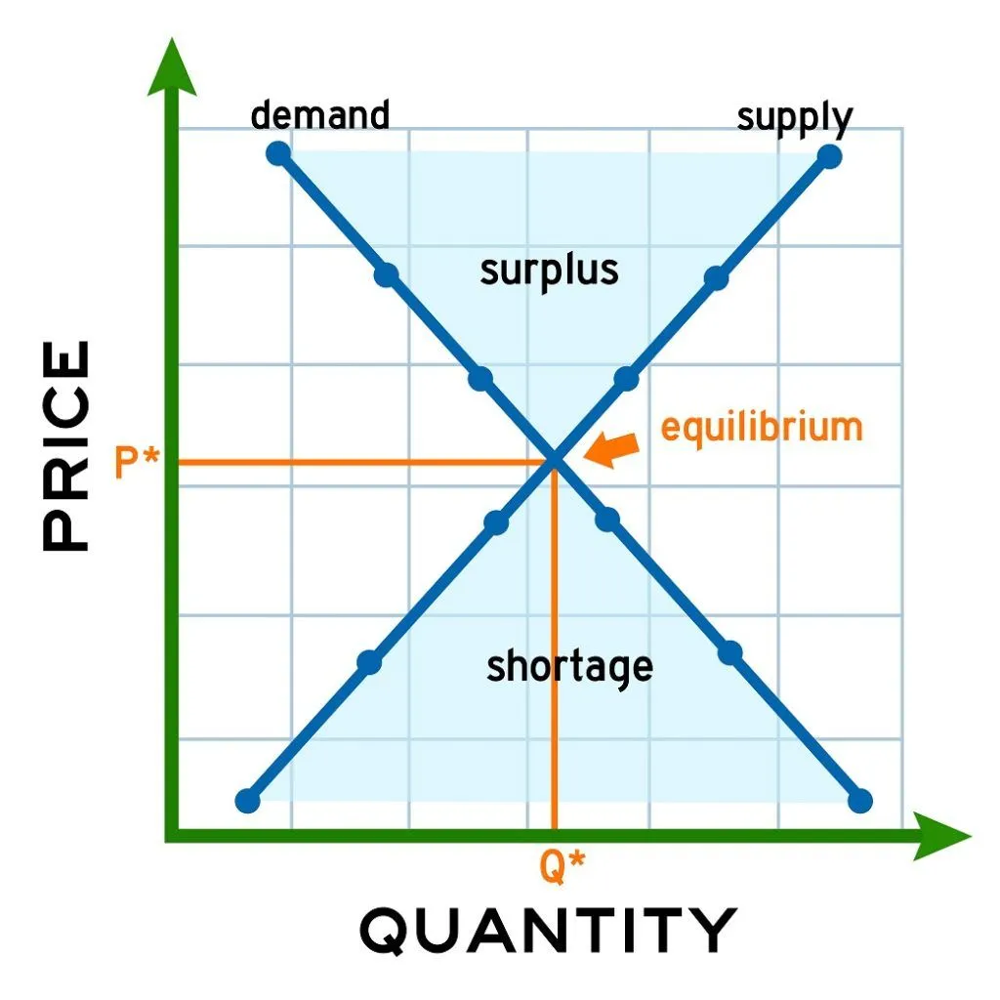

Main Page
Main Page  ICT
ICT  AP
AP Market Equilibrium
Ang equilibrium o ekwilibriyo ay isang kondisyon sa pamilihan kung saan nagkakasundo ang demand at supply sa iisang preso at dami. Dito ay walang labis at wala ring kulang. Kuntento ang parehong prodyuser at konsyumer. Mahalagang marating ito upang makamit ang tagumpay sa pamilihan.
Qd = Qs
Makikita ang equilibrium sa intersection ng demand curve at supply curve.
https://cdn.corporatefinanceinstitute.com/assets/equilibrium-quantity-1024x1024.jpeg
Kapag mas malaki and demand kaysa sa supply, nagkakaroon ng shortage o kakulangan. Hindi kayang tugunan ng supply ang demand.
Kapag naman mas malaki ang supply kaysa demand, nagkakaroon ng sobra o surplus na produkto.
Paglipat ng Market Equilibrium
Ang market equilibrium ay maaaring lumipat kapag nagkaroon ng pagbabago sa dami ng supply, demand, o ng pareho.

https://static.vecteezy.com/system/resources/previews/042/401/630/non_2x/market-equilibrium-occurs-when-the-quantity-supplied-equals-the-quantity-demanded-at-a-particular-price-vector.jpg
Ang pagtaas ng demand ay nakatutulong sa pagtaas ng equilibrium price at quantity, habang ang pagtaas ng supply ay nakatutulong sa pagbaba ng equilibrium price at pagtaas ng equilibrium quantity.